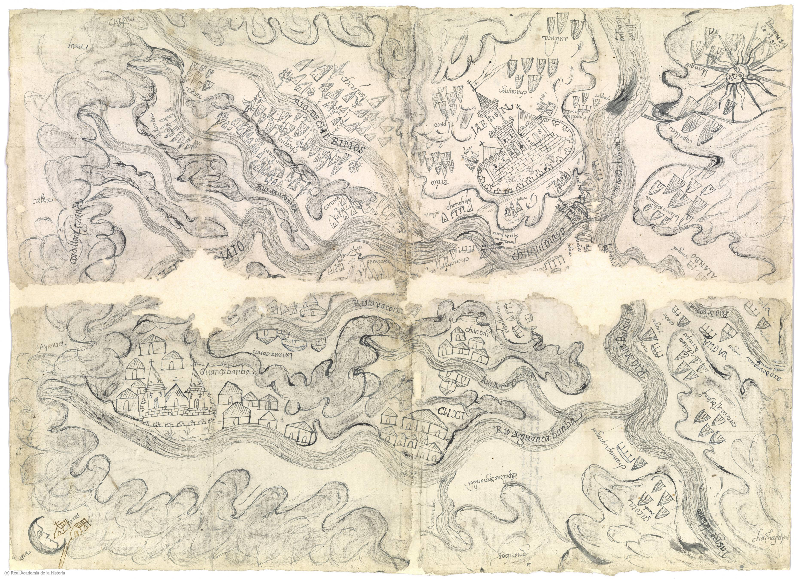
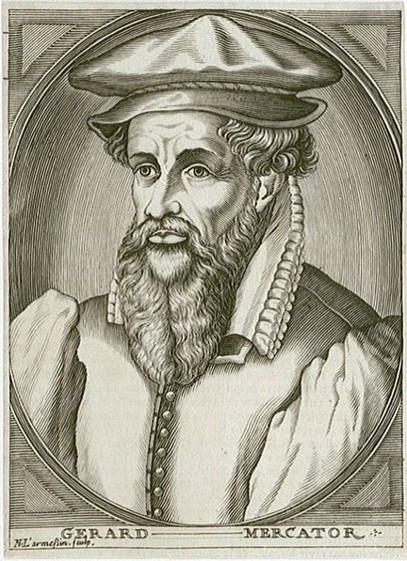

"Property is theft!" [La propriété, c'est le vol!] (Proudhon, 1840)
"THE first man who, having enclosed a piece of ground, bethought himself of saying This is mine, and found people simple enough to believe him, was the real founder of civil society." [La propriété, c'est le vol!] (Rousseau, 1754)
"Property is a right not a thing" (MacPherson, 1978)
Original written works from Greece - Plato and Aristotle (both slave owners)
In feudal Europe as a "Natural Right" (god given)
Possession vs Ownership
"A bundle of sticks"
Government as a means of preserving private property
Natural Right
“. . . our manifest destiny to overspread the continent allotted by Providence for the free development of our yearly multiplying millions“ (O'Sullivan, 1845 quoted in Hietala, 2003 p. 255)
Coercion (violence)
“The first person who, having fenced off a plot of ground, took it into his head to say this is mine and found people simple enough to believe him, was the true founder of civil society” (Rousseau, 1755 reprinted in MacPherson, 2011, p 31)
Tool of Statecraftas far back as Rome
|
 |
Estate maplate 13th or 14th C onwards
|
Palomino, Diego (1549). Traça de la conquista del capitán Diego Palomino: [de las Relaciónes Geográficas, Provincia de Chuquimayo, Perú]
Kain, R. J. P., & Baigent, E. (1992). The Cadastral Map in the Service of the State: A History of Property Mapping. Chicago: University of Chicago Press.
Harley, J. B. (1988). Maps, Knowledge, and Power. In D. Cosgrove & S. Daniels (Eds.), Iconography of Landscape: Essays on the Symbolic Representation, Design and Use of Past Environments (pp. 277-312). Cambridge, UK: Cambridge Univ. Press.
"The specific functions of maps ... range from global empire building, to the preservation of the nation state, to the local assertion of individual property rights. In each of these contexts the dimensions of polity and territory were fused in images which - just as surely as legal charters and patents - were part of the intellectual apparatus of power." (Harley, 1988 p. 281-2)
"... maps are active, creative, and constitutive. More bluntly, they are implicated in creating the reality that they presume to reveal." (Craib, 2000, p. 13)
"As much as guns and warships, maps have been the weapons of imperialism. ... Surveyors marched alongside soldiers, initially mapping for reconnaissance, then for general information, and eventually as a tool of publication, civilization, and the exploitation of the defined colonies." (p. 282)
"Whether in the general history of agricultural improvement, of enclosure, of the draining and embankment of fens and marshes, of the reclamation of hill and moor, the surveyor ever more frequently walks the at the side of the landlord in spreading capitalist forms of agriculture." (p. 285)
Hereford Mappa Mundi, Richard of Haldingham and Lafford, c 1300. https://commons.wikimedia.org/ wiki/File:Hereford-Karte.jpg
Mercator, Gerhard (1569). Nova et Aucta Orbis Terrae Descriptio ad Usum Navigantium Emendate Accommodata [map]. https://en.wikipedia.org/wiki/ Mercator_1569_world_map
Minard, Charles Joseph (1869). Napoleon's march on Moscow March 1812 [map]. https://upload.wikimedia.org/wikipedia/commons/2/29/Minard.png
d'Anville, Jean Baptiste Bourguignon (1752). Carte de l'Inde : dressée pour la Compagnie des Indes [map]. https://upload.wikimedia.org/ wikipedia/commons/5/53/ Carte_de_L'Inde_1752.jpg
Rennell, James (1782). Hindoostan [map]. https://www.loc.gov/ resource/g7625.ct001443/
"The geographical unity of India is, in short, a creation of the British mapping of their empire." (p. 16)
"For the eighteenth-century philosophes, mapmaking was the epitome of the ordered and structured creation of a coherent archive of knowledge." (p. 18)
"The maps of India neverthelss for a disciplinary mechanism, a technology of vision and control ... (p. 25)
"Indigenous respondents realized that they were presenting their communities to the king and smultaeneously creating maps for their communities, mirroring the ambiguities of life after conquest. As such, their maps reveal how indigenous elites oscilated between the colonial and indigenous worlds (Mundy 1996, 67)" (p. 25)
"The wars of independence, both Indigenous and Anglo-American, that covered a half a century were about respect, resources, land, and sovereignty. More abstractly they were about legitimacy and the moral mandate to determine how war, commerce, and diplomacy were to be conducted. At the heart of the matter was the question of power--not just who should have it, but how it should be wielded in a world where Indigenous nations remained largely undefeated" (p.319)
{kind=link}
{kind=link}